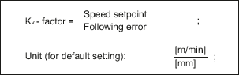

Display data | Meaning |
|---|
Following error | The difference between the position setpoint and the actual position value of the active measuring system 1 or 2 Unit: mm, inch or degrees |
System deviation | The difference between the position setpoint at the position controller input and the actual position value of the active measuring system 1 or 2 Unit: mm, inch or degrees |
Contour deviation (axial) | The current contour deviation is displayed with this value (fluctuations of the following error caused by settling on the speed controller caused by load changes). The contour deviation results from the difference between an actual position pre-calculated from the position setpoint and the actual position value of active measuring system 1 or 2. Unit: mm, inch or degrees |
Servo gain factor (calculated) | The servo gain factor in the display is calculated by the NC according to the following equation: Velocity setpoint = setpoint currently being output to the axis/spindle More information: Function Manual Axes and Spindles |
Active measuring system | 0: No measuring system active. 1: Measuring system 1 active. 2: Measuring system 2 active. |
State of measuring system 1 State of measuring system 2 | The state of measuring system 1 or 2 is output here: Active - Parked - Passive |
Actual position value measuring system 1 | The actual position of the axis measured via measuring system 1 or 2 The position is displayed in the machine coordinate system (no work offsets or tool offsets taken into account). Unit: mm, inch or degrees |
Actual position value measuring system 2 |
Position setpoint | Specified position output from the interpolator to the position control Unit: mm, inch or degrees |
Absolute compensation value
measuring system 1 | Display of the absolute compensation value for measuring system 1 or 2 The compensation value consists of the sum of backlash and leadscrew error compensation for the current axis position. Unit: mm, inch or degrees |
Absolute compensation value
measuring system 2 |
Compensation, sag + temperature | Display of the compensation value calculated for the current axis position based on the total of the sag and temperature compensations. Unit: mm, inch or degrees |
Actual speed value, active encoder | The pulses supplied by the encoder are evaluated by the NC and displayed. Unit: % 100% means maximum speed. |
Speed setpoint, drive | Speed setpoint transferred to the drive (= speed setpoint from position controller and feedforward control) Unit: % 100% means maximum speed setpoint. |
Programmed spindle speed setpoint | Speed setpoint programmed by the user Unit: rpm e.g. Input: S1000; display: 1000 rpm Display applies to spindles only. |
Spindle speed setpoint current | Current active speed setpoint with correct sign, including calculated compensation value and any active speed limitation (specified in setting data or machine data) Unit: rpm Display applies to spindles only. |
Position offset to the
leading axis / spindle actual value | The currently valid position offset value is displayed here (relative to the actual value) if a position offset (angular offset between the following and leading spindle) has been programmed within the synchronous spindle functionality. Unit: mm, inches, degrees More information about the synchronous spindle: Function Manual Axes and Spindles |
Position offset to the
leading axis / spindle setpoint | The currently valid position offset value is displayed here (relative to the setpoint) if a position offset (angular offset between the following and leading spindle) has been programmed within the synchronous spindle functionality. Unit: mm, inches, degrees |
Override | The effective correction factor of the feed or spindle correction switch is displayed. Unit: % |
Current gear stage | Display of the current actual gear stage For axes, this is only displayed if a spindle is assigned to the axis. The display corresponds to the NC/PLC interface signal: DB31, ... DBX16.0-2 (actual gear stage) More information about the spindle: Function Manual Axes and Spindles |
Parameter set (axis) | Displays which of the six parameter sets of the position controller is active. More information: Function Manual Axes and Spindles |
Controller mode | Display of the current controller state: Position control Speed control Stopping Parking Follow-up Braking
More information: Function Manual Basic Functions |
Feedforward control mode | Indicates whether and if so, which mode of the dynamic feedforward control for the axis is active: More information on compensation: Function Manual Monitoring and Compensating |
"Referenced" state | Status display for reference point approach (axis): Curr. MS need not be ref.ed (active measuring system does not require referencing) Current MS referenced Curr. MS must be referenced (active measuring system requires referencing)
The display depends on the settings in the machine data: The display corresponds to the NC/PLC interface signal: DB31, ... DBX60.4 and 60.5 (referenced/synchronized 1 or 2) More information on reference point approach: Function Manual Axes and Spindles |
QEC state | Indicates whether and if so, which method of the quadrant error compensation (QEC) is active for the axis: Inactive Neural QEC learning active Conventional QEC active Conventional QEC w. adapt. Corr. v. active (conventional QEC with adaptation of the compensation value active) Neural QEC active Neural QEC w. adapt. Measurement duration active (neural QEC active with adaptation of the measuring time active) Neural QEC w. adapt. Decay time corr. v. active (neural QEC with adaptation of decay time of compensation value active) Neural QEC w. adapt. Meas. dur. + decay time Corr. v. active (neural QEC active with adaptation of measuring time and decay time of compensation value active)
More information on compensation: Function Manual Monitoring and Compensating |
"Travel to fixed stop" state | Indicates whether or not the axis has fulfilled the conditions for "Fixed stop reached" when the "Travel to fixed stop" function is active (IS DB31, ... DBX62.5): More information on travel to fixed end stop: Function Manual Monitoring and Compensating |
Torque limitation value | Indicates the value programmed via FXST[x] or SD43510 $SA_FIXED_STOP_TORQUE or the value defined via MD37010 $MA_FIXED_STOP_TORQUE_DEF for the clamping torque for "Travel to fixed stop". Unit: % of maximum torque |
Adaptation | Indicates whether adaptation of dynamic response and control parameters is activated on the axis. More information: Function Manual Axes and Spindles |